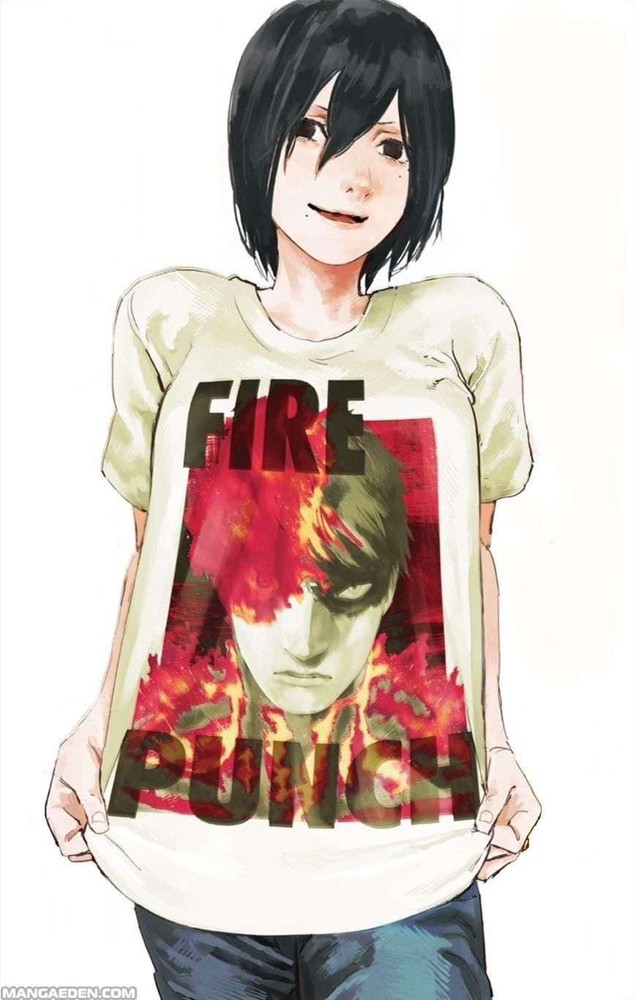

Historia de Fire Punch
En un mundo congelado por la Bruja de Hielo, la humanidad sobrevive en condiciones extremas. Algunos individuos poseen poderes sobrenaturales: los "bendecidos".
Agni, un joven con regeneración, vive con su hermana Luna. Para alimentar a su aldea, usan su carne regenerada como fuente de comida. Esto provoca que Doma, un bendecido con fuego eterno, queme la aldea como castigo.
Agni sobrevive, atrapado en llamas perpetuas gracias a su regeneración. Así nace Fire Punch, un ser envuelto en fuego que busca venganza. Su viaje lo lleva a enfrentarse a dilemas morales, fanatismo religioso y una profunda crisis de identidad.
La historia explora el dolor, la fe, la obsesión y el propósito en un mundo sin esperanza.
